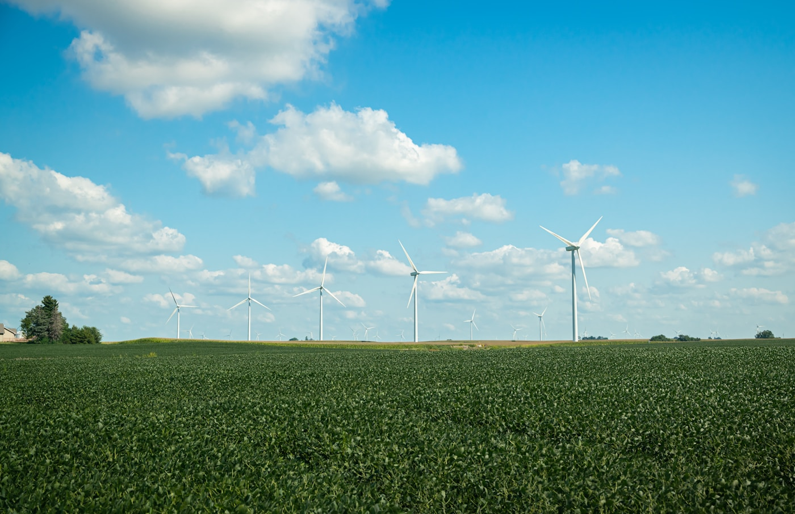
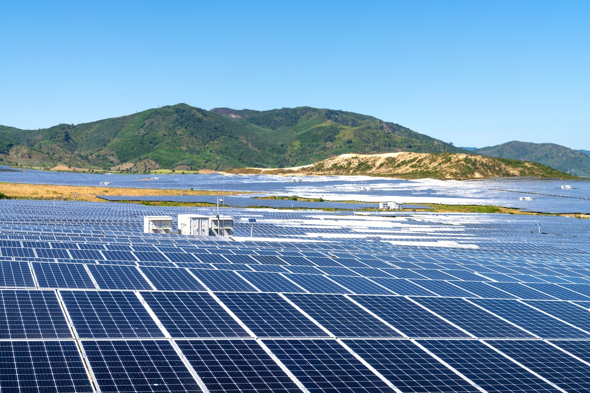
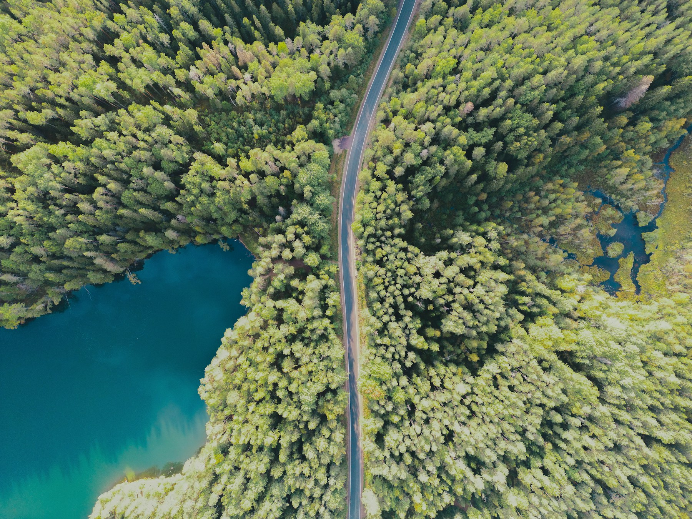
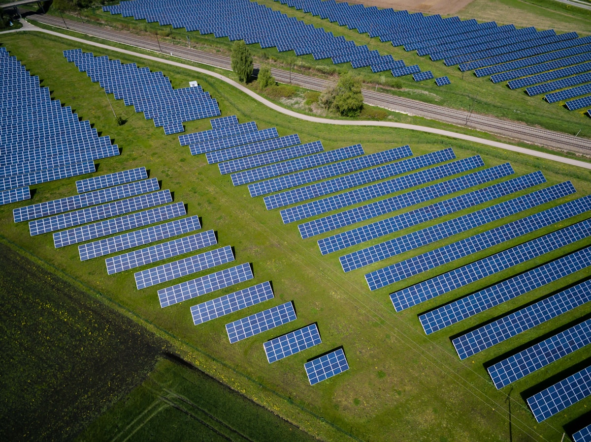

Green
Infrastructure
A platform for planning, managing, and scaling green infrastructure across complex systems.
A platform for planning, managing, and scaling green infrastructure across complex systems.
Terrava helps organizations plan, manage, and scale green infrastructure by bringing clarity and structure to complex real-world systems.





Design infrastructure as a connected system, bringing structure to how assets, locations, and operations work together across complex environments.
Learn More↗A structured approach to managing complex infrastructure systems—from connection to long-term operation.
Bringing assets and data into one unified system.
Connect assets, sites, and operations into one clear, unified platform.

StructureStructure infrastructure into coherent systems that are easier to manage and understand.

Manage renewable energy assets, grids, and supporting infrastructure through a unified system designed for long-term operation and scale.
Explore how Terrava helps organizations plan, manage, and scale green infrastructure across complex systems.
Explore Platform↗